44 scenes moved off pixelpel_rasterizer / pixelintegratingspectral_rasterizer by tools/migrate_scenes_legacy_rasterizer.py --mode full: photon map / final gather / irradiance cache, point-cloud SSS, Whitted, distribution-tracing and area-light-op chains. "Before" is the scene at master 83aa86d2f; "after" is the migrated scene. Both are rendered at reduced resolution (long side 160 px) with the shipped sample counts, three Sobol' value salts each (blurry_floor: eight); the thumbnails are salt 1, the PRE-denoise image composited over black, linear Rec.709 clamped to [0,1] and sRGB-encoded identically. The third column is the after-image as OIDN denoises it (shown for FeatureBased showcases, which keep denoising on as authored). Mean Y is the Rec.709 luminance of the composited raw image, mean over the salts (± salt-to-salt sd; the unclamped mean, so a blown-out image reads far above 1). 19 scenes change by more than 10%; each carries a measured cause. "noisy" flags a salt sd above 5% of the mean.
irrad_scale and the photon maps their caustics by power_scale; neither is physical. Doubling a scene's irrad_scale moves its legacy mean linearly (measured per scene), so those looks were tuned, and the physical replacements (subsurfacescattering_material, VCM) come out brighter or darker by whatever the fudge was. The light-scale knob that restores each mean is listed.max_diffuse_bounce 0 / 1 / 2 against the legacy image.Tests/Shaders/different_rmaps — its subject is per-OBJECT radiance_map, which only the legacy shader-op chain honours (the path tracer, BDPT and VCM read only the rasterizer's map); migrating would drop the feature silently. Needs an owner decision. Also left: visiblehuman (frozen DVR), shapes and kaleidoscope_atrium (slice C).| Scene | Before (legacy) | After (migrated, raw) | After (denoised) | Mean Y before | Mean Y after | Change | Cause |
|---|---|---|---|---|---|---|---|
FeatureBased/Animation/caustic_animation.RISEscene | 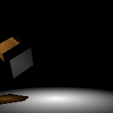 | 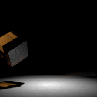 | 0.05563 ±1.9e-05 | 0.05584 ±2e-05 | +0.4% | VCM: the scene exists for its caustics (photon map), which only VCM reaches from these lights. Showcase: Look kept (+0.4%). Denoised after-image is clean. | |
FeatureBased/Animation/translucent_bunny.RISEscene | 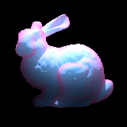 | 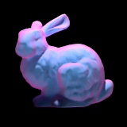 | 0.1288 ±0 | 0.08861 ±8.9e-05 | -31.2% >10% | Measured: the legacy image without the SSS op reads 0.048 and doubling its irrad_scale adds 0.081, so 0.081 of the legacy 0.129 was the op's fudge-scaled glow; the iridescent translucent_material (a uniform-colour SSS material cannot carry its view-dependent colour) is kept and its real transmission gives the rest. Showcase: Slightly darker, same look. Knob: omni_light power 2.0 -> 2.9 reads 0.1283 (legacy 0.1288). | |
FeatureBased/Caustics/pool_caustics.RISEscene | 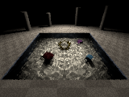 | 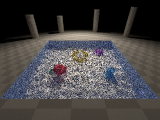 | 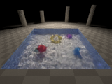 | 0.06979 ±0.00016 | 0.09378 ±0.00057 | +34.4% >10% | VCM: the scene exists for its caustics (photon map), which only VCM reaches from these lights. Measured: legacy direct part 0.034 + photon caustic 0.036; PT (no caustics) reads 0.036, so VCM's caustic is 0.058: the physical caustic is brighter than the power_scale 2.656 photon estimate. Showcase: Brighter, crisper caustics, water reads bluer. Knob: spot powers x0.75 (sun 100 -> 75, fill 150 -> 112) reads 0.0701 (legacy 0.0698). |
FeatureBased/Combined/crystal_lens.RISEscene | 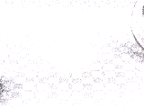 | 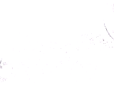 | 1.533 ±0.0056 | 1.81 ±0.0017 | +18.1% >10% | Measured: PT with max_diffuse_bounce 0 reads 1.428 = legacy without photon maps 1.426, so the +18% is indirect diffuse light the legacy global photon map under-counted; SMS (caustics) changes the mean by <0.01%. Both images clip at full white. Showcase: Overexposed before and after (environment at full scale). Knob: radiance_scale 0.85 (0.82 reads 1.486, legacy 1.533). | |
FeatureBased/Combined/gi_spheres.RISEscene | 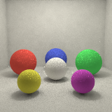 | 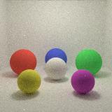 | 0.3996 ±0.00093 | 0.4082 ±0.00026 | +2.2% | Showcase: Look kept (+2.2%), smoother. | |
FeatureBased/Combined/glass_pavilion.RISEscene | 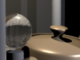 | 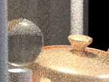 | 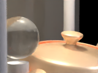 | 0.1205 ±4.6e-05 | 0.3246 ±0.0061 | +169.4% >10% | Measured: the same scene with max_diffuse_bounce 0 reads 0.134 (+11%), so +158 of the +169 points is indirect light on the walls / props, which the legacy chain shaded with direct lighting only (only the floor path-traced). Showcase: Much brighter interior, physically consistent. Knobs: omni powers x0.37 (15 -> 5.6, 25 -> 9.3) reads 0.1216 (legacy 0.1205), or max_diffuse_bounce 0 (+11%, but also drops the floor GI the author asked for). |
FeatureBased/Combined/showroom.RISEscene | 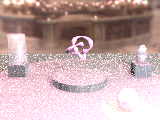 | 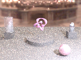 | 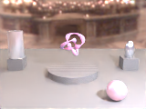 | 0.649 ±0.076 | 0.4595 ±0.0013 | -29.2% >10% noisy | Measured: legacy without the AO op reads 0.449 (after: 0.460, +2.3%): the -29% is the dropped ambientocclusion_shaderop term (owner ruling #6). Showcase: Darker, more contrast, no AO glow. Knob: radiance_scale ~1.75 (1.45 reads 0.571, 1.9 reads 0.686; legacy 0.649). |
FeatureBased/Combined/spotlight_drama.RISEscene | 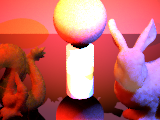 | 1.01 ±0.00049 | 3.381 ±0.012 | +234.8% >10% | Measured: doubling the legacy ops' irrad_scale adds 0.30 to the legacy 1.01, i.e. the SSS brightness was set by fudge factors; the physical SSS materials under the 15000-30000 power spots read much brighter. Showcase: SSS objects (jade dragon, wax bunny and sphere) now glow strongly. Knob: spot powers and backlight x0.30 (20000 -> 6000, 30000 -> 9000, 15000 -> 4500, backlight 30 -> 9) reads 1.016 (legacy 1.010). | ||
FeatureBased/Geometry/teapot.RISEscene | 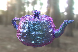 | 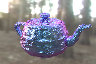 | 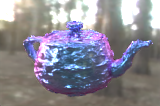 | 0.5451 ±0.0025 | 0.5437 ±0.0012 | -0.3% | Showcase: Look kept (-0.3%). |
FeatureBased/GlobalIllumination/irradiance_cache_torture.RISEscene | 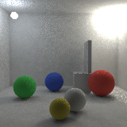 | 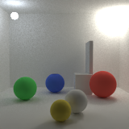 | 0.5492 ±0.00093 | 0.551 ±0.00015 | +0.3% | Showcase: Look kept (+0.3%). | |
FeatureBased/Parser/photon_cloister.RISEscene | 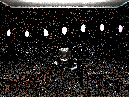 | 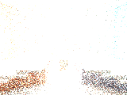 | 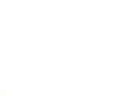 | 0.2198 ±0.0095 | 21.89 ±0.21 | +9861.4% >10% | Measured: with the two ceiling luminaires at scale 0.001 the legacy reads 0.081 and PT 0.168, so the luminaires are +0.14 under the legacy chain and +21.7 under PT. The one-sided disks face the ceiling (circulardisk normal +y), 8 cm below it: their light reaches the room only by bouncing off the ceiling (summed emitted power ~6e4, onto a 12 x 12 ceiling), and the legacy chain's only estimate of that bounce, its 10000-photon global map, read ~150x below PT's converged value. Showcase: BLOWN OUT (white). Knob: ceiling_lum scale 12000 -> 29 and ceiling_lum_cool 10000 -> 24 reads 0.2194 (legacy 0.2198). Recommended before merge. |
FeatureBased/Parser/pillow.RISEscene | 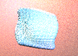 | 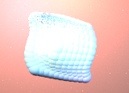 | 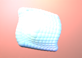 | 0.9888 ±0.0079 | 0.9769 ±0.0025 | -1.2% | Showcase: Look kept (-1.2%), satin highlights smoother. |
FeatureBased/Shaders/SSS/sss_gi_dragon.RISEscene | 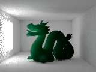 | 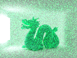 | 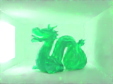 | 0.3917 ±0.0008 | 0.8493 ±0.013 | +116.8% >10% | Measured: PT capped at 3 diffuse bounces reads 0.509 (full 0.849): the box walls have albedo 1.0, so the bounces the legacy final gather truncated carry 40% of the converged image; the rest is the green SSS dragon (fudge-scaled before). Showcase: Brighter, greenish bounce light on the white walls. Knob: luminaire scale 8.2 -> 3.8 reads 0.396 (legacy 0.392); wall albedo 0.8 would also tame the infinite-bounce box. |
Tests/Animation/motion_blurred_caustic.RISEscene | 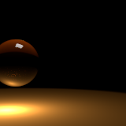 | 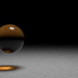 | – | 0.07957 ±0.01 | 0.08853 ±9.7e-05 | +11.3% >10% noisy | VCM: the scene exists for its caustics (photon map), which only VCM reaches from these lights. Measured: the legacy chain had NO direct lighting (legacy + DefaultDirectLighting reads 0.160); its caustic was 0.079 at power_scale 21.24, about 10x the physical caustic VCM renders. |
Tests/Cameras/fisheye.RISEscene | 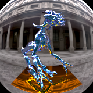 | – | 0.2166 ±7.7e-05 | 0.2166 ±0.00013 | +0.0% | ||
Tests/Caustics/diacaustic.RISEscene | 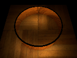 | 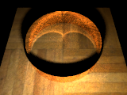 | – | 0.03126 ±0.001 | 0.1471 ±0.00025 | +370.5% >10% | VCM: the scene exists for its caustics (photon map), which only VCM reaches from these lights. Measured: the legacy chain had no direct lighting (caustic only); legacy + DefaultDirectLighting reads 0.140 vs after 0.147 (+4.9%). |
Tests/Caustics/rgb_dispersive_caustic.RISEscene | 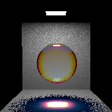 | 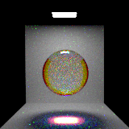 | – | 0.2195 ±0.00035 | 0.2438 ±0.00058 | +11.1% >10% | VCM: the scene exists for its caustics (photon map), which only VCM reaches from these lights. Measured: PT with max_diffuse_bounce 0 reads 0.199 = legacy without the photon map; PT full 0.243 = VCM 0.244: the +11% is indirect diffuse light the legacy chain had no op for. |
Tests/Caustics/triplecaustic.RISEscene | 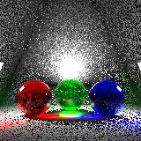 | 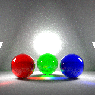 | – | 0.5623 ±0.0088 | 0.6908 ±0.00073 | +22.9% >10% | VCM: the scene exists for its caustics (photon map), which only VCM reaches from these lights. Measured: PT max_diffuse_bounce 0 reads 0.537 (legacy without photon map 0.518), PT full 0.692 = VCM 0.691: the +23% is indirect diffuse light. |
Tests/Geometry/teapot_analytic.RISEscene | 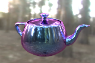 | – | 0.5338 ±0.00077 | 0.5328 ±0.00064 | -0.2% | ||
Tests/GlobalIllumination/cornellbox_fg.RISEscene | 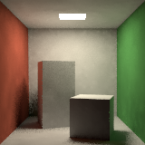 | 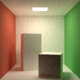 | – | 0.392 ±0.00091 | 0.512 ±0.00031 | +30.6% >10% | Measured: PT at max_diffuse_bounce 1 / 2 / unlimited reads 0.374 / 0.420 / 0.512; the legacy 0.392 is about one bounce: legacy truncation bias (Cornell walls keep scattering). |
Tests/Materials/dielectric_dispersion.RISEscene | 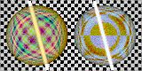 | 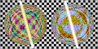 | – | 0.3527 ±0.00038 | 0.3672 ±0.0004 | +4.1% | |
Tests/Materials/iorstack.RISEscene | 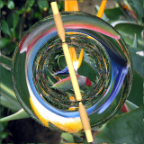 | – | 0.1791 ±8.6e-05 | 0.1792 ±3.2e-05 | +0.0% | ||
Tests/Materials/texture_dispersion.RISEscene | 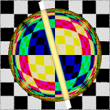 | 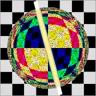 | – | 0.3655 ±0.00024 | 0.3763 ±0.00049 | +3.0% | RGB dispersion is now sampled per path (noisier at the shipped 16 spp) instead of the legacy deterministic split. |
Tests/PixelFilters/catmull-rom.RISEscene | 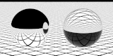 | – | 0.61 ±8.2e-05 | 0.6102 ±0.00011 | +0.0% | ambient_light kept (slice B2). | |
Tests/PixelFilters/gaussian.RISEscene | – | 0.6091 ±0.00026 | 0.6093 ±0.00034 | +0.0% | ambient_light kept (slice B2). | ||
Tests/PixelFilters/lanczos.RISEscene | – | 0.6101 ±8.9e-05 | 0.6101 ±7.2e-05 | +0.0% | ambient_light kept (slice B2). | ||
Tests/PixelFilters/mitchell-netravali.RISEscene | – | 0.61 ±0.0001 | 0.6101 ±0.00032 | +0.0% | ambient_light kept (slice B2). | ||
Tests/PixelFilters/tent.RISEscene | – | 0.6101 ±8.3e-05 | 0.6101 ±6.5e-05 | +0.0% | ambient_light kept (slice B2). | ||
Tests/SDF/sdf_caustic.RISEscene | – | 0.9987 ±0.0026 | 1.016 ±0.0012 | +1.7% | VCM: the scene exists for its caustics (photon map), which only VCM reaches from these lights. | ||
Tests/SMS/sms_slab_close_photonmap.RISEscene | – | 0.3059 ±0.0081 | 0.3044 ±0.0092 | -0.5% | Kept as the SMS series' non-SMS reference: VCM merging is the photon map's successor (the series already has PT+SMS variants). | ||
Tests/Shaders/ambocc_ibl.RISEscene | – | 0.1335 ±0.00069 | 0.1532 ±0.00028 | +14.8% >10% | Measured: PT with max_diffuse_bounce 0 reads 0.1335 = legacy AO 0.1335 exactly; the +15% is the indirect IBL bounce AO never had. | ||
Tests/Shaders/arealight_shaderop.RISEscene | – | 0.4184 ±3.9e-05 | 0.4023 ±5.3e-05 | -3.8% | rect_light reproduces the op (an N 1 op is a Lambertian panel of radiance power/pi). | ||
Tests/Shaders/blurry_floor.RISEscene | – | 0.4067 ±3e-05 | 0.4707 ±0.032 | +15.7% >10% noisy | Measured (8 salts): PT with max_diffuse_bounce 0 reads 0.40673 = legacy 0.40674; the +16% is the indirect diffuse bounce (the DT op had diffuse false). | ||
Tests/Shaders/blurry_glass.RISEscene | – | 0.1696 ±0.00012 | 0.1756 ±7.5e-06 | +3.5% | The glass slab's thin edges are now visible. | ||
Tests/Shaders/dt_with_irrcache.RISEscene | – | 0.306 ±0.00024 | 0.306 ±8.3e-05 | -0.0% | |||
Tests/Shaders/simple_dispersion.RISEscene | – | 0.3618 ±0.00015 | 0.373 ±0.00026 | +3.1% | RGB dispersion sampled per path (noisier at 16 spp). | ||
Tests/Spectral/spectral_dispersive_caustic.RISEscene | – | 1.522 ±0.0028 | 1.628 ±0.0043 | +6.9% | VCM: the scene exists for its caustics (photon map), which only VCM reaches from these lights. | ||
Tests/SubsurfaceScattering/caustic_sss.RISEscene | – | 0.003825 ±9.4e-05 | 0.0002133 ±7.5e-07 | -94.4% >10% | Measured: legacy without its ambient_light reads 0.00378 (= the 0.00382 legacy), so the image is the caustic-lit SSS, whose photons carried power_scale 1593 and the op irrad_scale 30; the physical render is 18x dimmer. VCM also ignores ambient_light (it reads 0 there; slice B2 moves ambient to a radiance_map). | ||
Tests/SubsurfaceScattering/sss.RISEscene | – | 0.05983 ±9.2e-06 | 106.6 ±0.71 | +178096.8% >10% | Measured: doubling the legacy irrad_scale doubles the legacy mean (0.0598 -> 0.1197): the legacy image is entirely the fudge-scaled op; under the scene's 500000-power omni the physical materials saturate. Proposed retune: omni power 500000 -> 280 (linear: x0.00056). | ||
Tests/SubsurfaceScattering/sss_colorvariation.RISEscene | – | 0.04016 ±0.00021 | 0.03962 ±5.2e-05 | -1.4% | The checker colour variation cannot ride the SSS materials' scalar coefficients, so the translucent_material is kept and the op dropped. | ||
Tests/SubsurfaceScattering/sss_different_bsdf.RISEscene | – | 0.09499 ±3.5e-05 | 0.008746 ±8.8e-05 | -90.8% >10% | Measured: doubling irrad_scale moves the legacy 0.095 to 0.176 (85% of the legacy image is the fudge-scaled op). Proposed retune: omni power 12500 -> 136000 (x10.9). | ||
Tests/SubsurfaceScattering/sss_ibl.RISEscene | – | 0.4673 ±0 | 0.5963 ±0.00092 | +27.6% >10% | Measured: doubling irrad_scale adds 0.06 to the legacy 0.467; the AO-lit irradiance and the fudge scale are replaced by physical IBL. Proposed retune: radiance scale x0.78. | ||
Tests/SubsurfaceScattering/sss_multiple_lights.RISEscene | – | 0.737 ±0.00055 | 0.6937 ±0.00029 | -5.9% | |||
pr.RISEscene | – | 0.571 ±0.0026 | 0.585 ±0.00021 | +2.5% | The CLI performance-rating scene (DoPerformanceRating): ratings are not comparable across this change. |